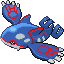
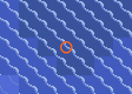
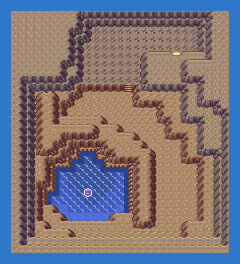

Talk to the scientist on the Weather Institute's 1F: he reports heavy rain on one sea route (105, 125, 127 or 129). Surf there: a cave mouth, the Marine Cave, has opened in the sea. Kyogre sleeps at the end of it. The cave moves after a while, so ask again if it is gone.
Emerald's own event, unchanged.
Side quest "Kyogre and Groudon return": Marine Cave End.
